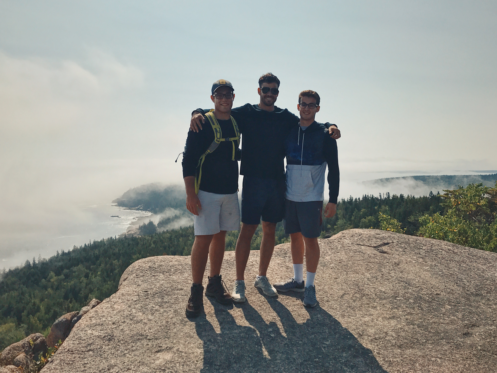

Hobbies
CT is an amazing state not only because of its proximity to big cities like NYC and Boston, but because of everything it has to offer within it. Growing up, I would always make a trip down to big parks such as Sleeping Giant and go for a days hike. I was ecstatic to visit Acadia this past September and hike up places like Cadillac Mountain. My cousins made the drive out here and we spent three days camping and hiking, and that was pretty cool. Fishing is also something that I've always loved. We dock our boat off the coast of New London and drive out 50 miles out to sea and stay for around 8 hours out there. Bass and Cods are always my favorite catch but I'll settle for a decent trout. I'm looking forward to discovering some good spots near campus to spend the day out.

Home About Contact Sports Hobbies